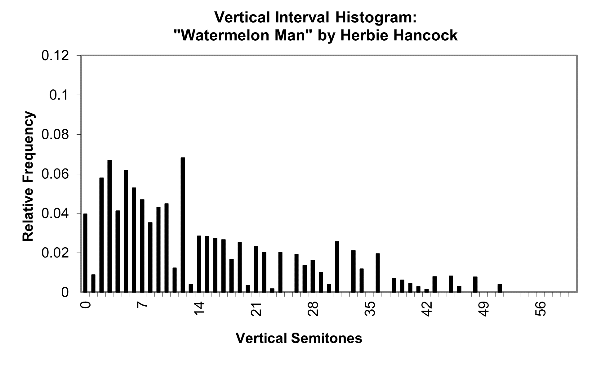
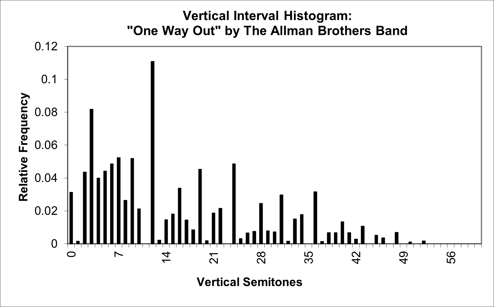
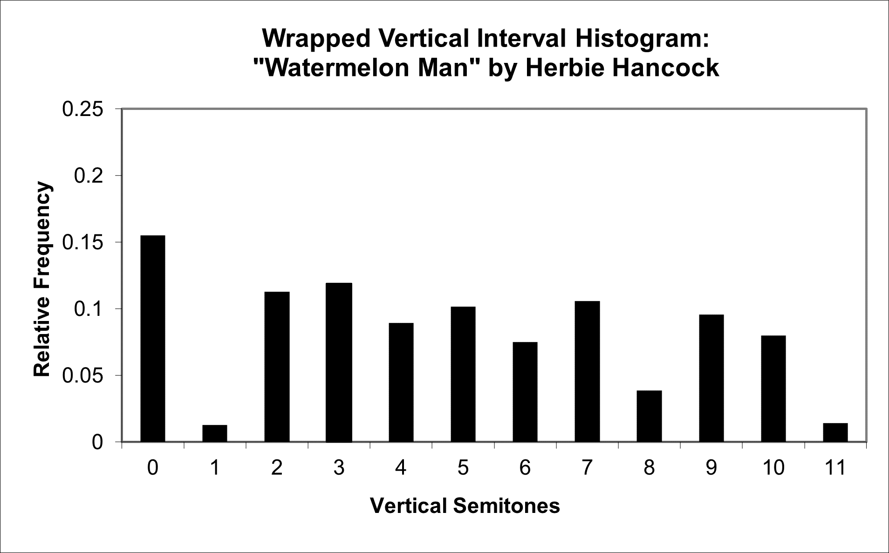
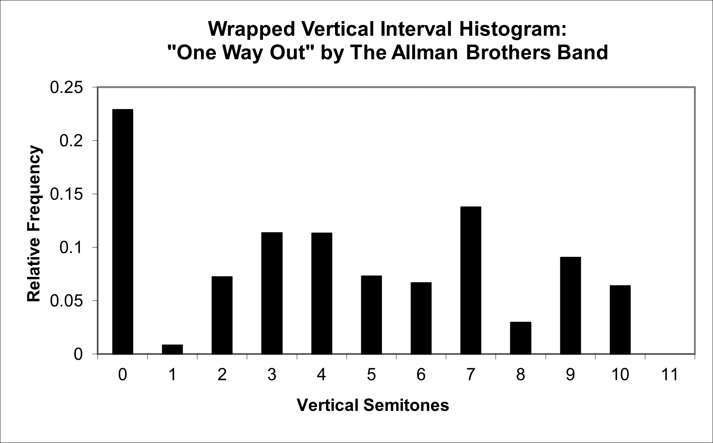
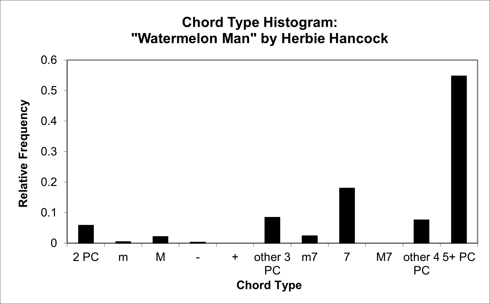
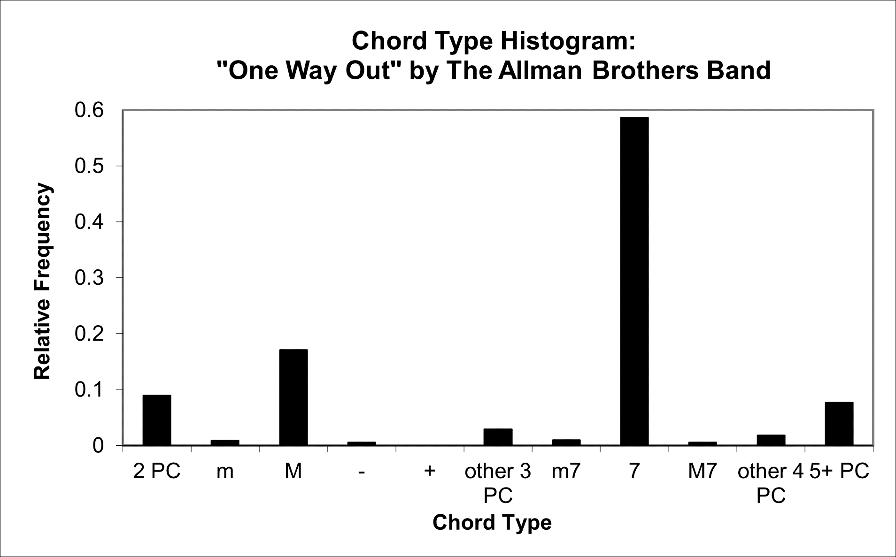

| Feature Explanations: Chords and Vertical Intervals |
GENERAL NOTES
Chords in general, and tonal harmony in particular, are areas that have received substantial attention in traditional Western analytical systems. It is essential to emphasize, however, that theoretical frameworks based specifically on Western tonal harmony do not necessarily apply to many kinds of music, as these frameworks were developed primarily with respect to Western classical music. As a consequence, most of the vertical interval and chord-based features included in the jSymbolic feature library are not based on harmonic function, and instead emphasize statistical information about and derived directly from the vertical intervals between pitches that sound simultaneously. Having noted this, it is also useful to recall that features can be considered useful even if all they do is help to differentiate between classes statistically, and this can be true even if certain individual features are inspired by theoretical assumptions that do not necessarily apply historically to some of the music from which they are extracted. The jSymbolic feature catalogue does therefore include certain features that make use of certain basic concepts that are specific to Western harmonic theory.
As is the case with other types of features, histograms can provide a useful starting point for constructing features based on chords and vertical intervals, both directly as feature vectors themselves and as intermediate representations for calculating derivative features (please consult the section of the manual on overall pitch statistics for a brief general introduction to histograms). The particular vertically-oriented histograms discussed in this section are all at their core based on vertical intervals or, phrased slightly differently, pitches that are sounding simultaneously. These histograms include one looking at all such simultaneities, a version of this histogram where vertical intervals are wrapped by octaves and a third histogram where counts are made of different chord types. These histograms are used as the basis for constructing some (but certainly not all) of the features described in this section of the manual.
The first, most basic histogram is called a vertical interval histogram, and consists of bins each associated with a different vertical interval. These bins are each labeled with the number of semitones in the corresponding interval, and range from 0 (doubled pitches) to 127, which corresponds to the full range of pitch differences permitted by MIDI. The magnitude of each bin is found by going through the music MIDI tick by MIDI tick and noting all vertical intervals that are sounding at each tick. This is done exhaustively, so that multiple vertical intervals will be noted per tick if there are more than two pitches sounding simultaneously (e.g. a tick with a major triad in root position sounding would increment the bins associated with vertical intervals 4, 7 and 3). This process is done tick by tick rather than by note onset slice (which are explained in the section of the manual on melodic features) because the former approach effectively takes the length with which stacks of notes are held, which is musically meaningful (this can, however, result in a small amount of noise in the histogram if a MIDI file is encoded with imperfectly aligned note onsets, but the number of ticks like this will usually be very small relative to the number of of ticks where the "correct" note stack is held, and will thus only introduce low amplitude noise to the histogram; more on this below). As this histogram is being constructed, the bin incrementations are weighted by the combined MIDI velocities (loudnesses) of each pair of notes involved in each vertical interval; this is done to take into account the common practice of dynamically emphasizing more harmonically important notes (if no varied dynamics are encoded in the music being analyzed then every note is weighted equally in this sense). Finally, the histogram is normalized, bin magnitudes under .001 are filtered out (to eliminate potential statistical noise caused by non-synchronized note onsets referred to above) and the histogram is renormalized.
The end result is a histogram that indicates the relative extent to which each possible vertical interval is present throughout the music being analyzed as a whole, and how significant these vertical intervals are relative to one another, with a weighting based on both the aggregated durations with which each interval type is held and dynamics (if present). This is reasonable, since long notes often have greater harmonic significance than short notes, and stressed notes tend to be more harmonically important than notes played more softly. This histogram does not incorporate any tonal assumptions, although it does require quantization into the twelve standard Western pitches (i.e. microtone subdivisions are not incorporated).
The two examples below show the vertical interval histograms for "Watermelon Man" by Herbie Hancock (a blues-influenced hard bop piece) and "One Way Out" as interpreted by The Allman Brothers Band (a blues-rock interpretation):


Although vertical interval histograms actually have 128 bins, neither of these two pieces have any vertical intervals larger than 5 octaves, so only the first 61 bins are included in the graphs below. Sometimes it can be useful to compress vertical interval histograms even further, by aggregating vertical intervals separated by octave multiples into a single bin (so that doubled notes, octaves, two octaves, etc. are all combined together into a single bin, just as minor seconds, minor ninths, etc. are also combined into another bin, and so on). The result is the wrapped vertical interval histogram, which simply consists of the vertical interval histogram wrapped by octaves, such that it has 12 bins. The wrapped vertical interval histograms for the two pieces introduced above are shown below:


The relationship between the two kinds of histograms can be seen, for example, in the two figures for The Allman Brothers piece: the vertical interval histogram's bin 0 (doubled notes) has only a moderate magnitude, but bin 0's magnitude in the piece's wrapped vertical interval histogram is much higher, because it also combines the octave, two octave, three octave, etc. bins of the original vertical interval histogram (and single vertical octave intervals are evidently particularly prevalent in this piece). Both types of histogram can be useful for highlighting different kinds of information, as can be seen from comparing the four histograms for these two pieces, which are harmonically similar to an extent in that they are both blues-inspired, but are also quite different in that one is a jazz piece and the other is 70's rock.
It is notable that both types of histogram introduced above describe the vertical intervals found in the music being analyzed as a whole, but do not encapsulate information about which intervals occur together or in what sequence. jSymbolic also calculates information about temporal sequences of vertical intervals in the section of the jSymbolic manual on n-grams, but there are also features described in the present section of the manual that look at groups of vertical intervals occurring simultaneously. The chord type histogram is one example of this kind of feature: This is a normalized histogram that has bins labeled with types of chords (in the following order and with the indicated identifying codes): partial chords consisting of just two pitch classes [0], minor triads [1], major triads [2], diminished triads [3], augmented triads [4], other triads [5], minor seventh chords [6], dominant seventh chords [7], major seventh chords [8], other chords consisting of four pitch classes [9], and complex chords with more than four pitch classes [10]. This histogram's bin magnitudes are calculated by going through MIDI ticks one by one and incrementing the counter for the bin that corresponds to the chord, if any, that is present during each given tick; the result is that the chords in this histogram are weighted by the duration with which each chord is played (but not, in this case by, by MIDI velocity / dynamics). All inversions are treated as equivalent and octave doubling does not affect the calculation of this histogram. Like the other two types of histograms, this histogram type is also filtered and renormalized to remove very small bin values, which can be caused by note onset synchronization problems in MIDI encodings.
The chord type histograms for the two pieces discussed above are shown below.
Both pieces have a large number of dominant seventh chords, as one might expect given their blues inspiration. It is also notable that the Hancock piece has a large number of chords consisting of complex chords comprised of five or more different pitch classes. This is likely due to the relative harmonic sophistication and dense chords often found in jazz (although this piece is not particularly complex in this way compared to other jazz).


The prevalence of these complex chords in the Hancock piece does bring to mine two related general points, however. Firstly, chord type histograms consider all sounding vertical intervals present in each MIDI tick, meaning that the chords noted include pitches from all sources, including (potentially improvised) solo lines, not just the "official" chords one might see on a chord chart intended to be played be accompanists emphasizing harmony in particular. Secondly, some statistical noise due to potential issues with encoded non-synchronized note onsets (as discussed above) may be collectively prevalent enough not to be filtered out using the mechanisms described above (this can happen especially in music with many fast, short notes, since the ratio of ticks associated with such non-synchronicities to ticks of short held notes will be greater compared to the aggregated ticks of notes that are held longer). This issue, when it does occur, can be particularly evident in the two bins corresponding to partial chords of two pitch classes and complex chords with more than four pitch classes. In order to avoid such problems, it is generally best to extract features from files that have been encoded using, for example, score editing software with expressive playback options disabled.
None of the histograms introduced above provide any information about arpeggiation, unfortunately, but some limited information related to this is collected during melodic feature extraction. An expanded system in the future could integrate vertical statistics with horizontal statistics to better deal with arpeggios, and could also collect information about inversions, as well as chord transitions, in order to obtain more sophisticated and accurate features.
As a final note, all notes occurring on MIDI Channel 10 are ignored when calculating all of the features described in this section. This is because the "pitch" values on Channel 10 correspond to (mostly unpitched) percussion instruments, not to actual pitches.
JSYMBOLIC FEATURE CATALOGUE (CHORDS AND VERTICAL INTERVALS SECTION)
- C-1 Vertical Interval Histogram: A feature vector consisting of bin magnitudes of the vertical interval histogram described in the jSymbolic manual. Each of the bins is associated with a different vertical pitch interval, and is labeled with the number of semitones in that corresponding interval. More specifically, these are numbered from 0 (a unison) to 127 (a vertical interval of 127 semitones). The magnitude of each bin is found by going through a recoding MIDI tick by MIDI tick and noting all vertical intervals that are sounding at each tick, as well as the MIDI velocities of the pair of notes involved in each vertical interval. Rests and periods where only a single note is sounding are ignored when this histogram is calculated. The result is a histogram that indicates which vertical intervals are present, and how significant these vertical intervals are relative to one another, with a weighting based on both MIDI velocity and the aggregated durations with which each interval is held throughout the piece. This histogram is first normalized, then bin magnitudes under .001 are filtered out and set to 0 to reduce noise. Finally, the histogram is re-normalized.
- C-2 Wrapped Vertical Interval Histogram: A feature vector consisting of bin magnitudes of the wrapped vertical interval histogram described in the jSymbolic manual. Each of the bins is associated with a different vertical pitch interval, and is labeled with the number of semitones in that corresponding interval. More specifically, these are numbered from 0 (a unison) to 11 (a vertical interval of 11 semitones). The magnitude of each bin is found by going through a recoding MIDI tick by MIDI tick and noting all vertical intervals that are sounding at each tick, as well as the MIDI velocities of the pair of notes involved in each vertical interval. Intervals larger than 11 semitones are wrapped (e.g. an octave (12 semitones) is added to the bin for unisons (0 semitones)). Rests and periods where only a single note is sounding are ignored when this histogram is calculated. The result is a histogram that indicates which vertical intervals are present, and how significant these vertical intervals are relative to one another, with a weighting based on both MIDI velocity and the aggregated durations with which each interval is held throughout the piece. This histogram is first normalized, then bin magnitudes under .001 are filtered out and set to 0 to reduce noise. Finally, the histogram is re-normalized.
- C-3 Average Vertical Note Density: Mean number of notes sounding simultaneously. This includes doubled pitches. Rests are excluded from this calculation, as are unpitched notes.
- C-4 Average Number of Simultaneous Pitches: Mean number of distinct pitches sounding simultaneously. Rests are excluded from this calculation. Unisons are also excluded from this calculation, but octave multiples are included in it.
- C-5 Average Number of Simultaneous Pitch Classes: Mean number of distinct pitch classes sounding simultaneously. Rests are excluded from this calculation.
- C-6 Average Amount of Vertical Pitch Class Doubling: Mean number of notes sounding at a time that match the pitch class of another note sounding at the same time. Rests are excluded from this calculation.
- C-7 Variability of Vertical Note Density: Standard deviation of the number of notes sounding simultaneously. This includes doubled pitches. Rests are excluded from this calculation, as are unpitched notes.
- C-8 Variability of Number of Simultaneous Pitches: Standard deviation of the number of distinct pitches sounding simultaneously. Rests are excluded from this calculation. Unisons are also excluded from this calculation, but octave multiples are included in it.
- C-9 Variability of Number of Simultaneous Pitch Classes: Standard deviation of the number of different pitch classes sounding simultaneously. Rests are excluded from this calculation.
- C-10 Variability of Amount of Vertical Pitch Class Doubling: Standard deviation of the number of notes sounding at a time that match the pitch class of another note sounding at the same time. Rests are excluded from this calculation.
- C-11 Number of Distinct Vertical Intervals: Number of distinct vertical intervals that appear at least once in the piece.
- C-12 Number of Distinct Wrapped Vertical Intervals: Number of distinct wrapped vertical intervals that appear at least once in the piece.
- C-13 Number of Common Vertical Intervals: Number of distinct vertical intervals that each account individually for at least 12% of all vertical intervals present (weighted by duration and MIDI velocity).
- C-14 Number of Common Wrapped Vertical Intervals: Number of distinct vertical intervals that each account individually for at least 12% of all wrapped vertical intervals present (weighted by duration and MIDI velocity).
- C-15 Number of Very Common Vertical Intervals: Number of distinct vertical intervals that each account individually for at least 25% of all vertical intervals present (weighted by duration and MIDI velocity).
- C-16 Number of Very Common Wrapped Vertical Intervals: Number of distinct vertical intervals that each account individually for at least 25% of all wrapped vertical intervals present (weighted by duration and MIDI velocity).
- C-17 Smallest Vertical Interval: The smallest vertical interval present in the piece, measured in semitones. Set to 0 if there are no vertical intervals.
- C-18 Largest Vertical Interval: The largest vertical interval present in the piece, measured in semitones. Set to 0 if there are no vertical intervals.
- C-19 Largest Wrapped Vertical Interval: The largest wrapped vertical interval present in the piece, measured in semitones. Set to 0 if there are no vertical intervals.
- C-20 Mean Vertical Interval: Mean average (in semitones) of the vertical intervals in the piece. Unlike the calculation of the Vertical Interval Histogram and its dependent features, each vertical interval is not weighted by the MIDI velocity at which it is played in the calculation of this feature. It is, however, weighted by the durations with which vertical intervals are held.
- C-21 Mean Wrapped Vertical Interval: Mean average (in semitones) of the wrapped vertical intervals in the piece. Unlike the calculation of the Wrapped Vertical Interval Histogram and its dependent features, each vertical interval is not weighted by the MIDI velocity at which it is played in the calculation of this feature. It is, however, weighted by the durations with which vertical intervals are held.
- C-22 Most Common Vertical Interval: The interval in semitones corresponding to the vertical interval histogram bin with the highest magnitude. Set to 0 if there are no vertical intervals.
- C-23 Most Common Wrapped Vertical Interval: The interval in semitones corresponding to the wrapped vertical interval histogram bin with the highest magnitude. Set to 0 if there are no vertical intervals.
- C-24 Second Most Common Vertical Interval: The interval in semitones corresponding to the vertical interval histogram bin with the second highest magnitude. Set to 0 if there are no vertical intervals.
- C-25 Second Most Common Wrapped Vertical Interval: The interval in semitones corresponding to the wrapped vertical interval histogram bin with the second highest magnitude. Set to 0 if there are no vertical intervals.
- C-26 Distance Between Two Most Common Vertical Intervals: Absolute value of the difference (in semitones) between the most common and second most common vertical intervals in the piece. Set to 0 if there are less than two distinct vertical intervals.
- C-27 Distance Between Two Most Common Wrapped Vertical Intervals: Absolute value of the difference (in semitones) between the most common and second most common wrapped vertical intervals in the piece. Set to 0 if there are less than two distinct vertical intervals.
- C-28 Prevalence of Most Common Vertical Interval: Fraction of vertical intervals on the vertical interval histogram corresponding to the most common vertical interval. Set to 0 if there are no vertical intervals.
- C-29 Prevalence of Most Common Wrapped Vertical Interval: Fraction of vertical intervals on the wrapped vertical interval histogram corresponding to the most common vertical interval. Set to 0 if there are no vertical intervals.
- C-30 Prevalence of Second Most Common Vertical Interval: Fraction of vertical intervals on the vertical interval histogram corresponding to the second most common vertical interval. Set to 0 if there are no vertical intervals.
- C-31 Prevalence of Second Most Common Wrapped Vertical Interval: Fraction of vertical intervals on the wrapped vertical interval histogram corresponding to the second most common vertical interval. Set to 0 if there are no vertical intervals.
- C-32 Prevalence Ratio of Two Most Common Vertical Intervals: Ratio between the fraction of vertical intervals corresponding to the second most common vertical interval on the vertical interval histogram and the fraction of vertical intervals corresponding to the most common vertical interval. Set to 0 if either of these prevalences are 0.
- C-33 Prevalence Ratio of Two Most Common Wrapped Vertical Intervals: Ratio between the fraction of vertical intervals corresponding to the second most common vertical interval on the wrapped vertical interval histogram and the fraction of vertical intervals corresponding to the most common vertical interval. Set to 0 if either of these prevalences are 0.
- C-34 Vertical Interval Variability: Standard deviation of the vertical intervals in the piece. Provides a measure of how close the vertical intervals as a whole are to the mean vertical interval. Unlike the calculation of the Vertical Interval Histogram and its dependent features, each vertical interval is not weighted by the MIDI velocity at which it is played in the calculation of this feature. It is, however, weighted by the durations with which vertical intervals are held.
- C-35 Wrapped Vertical Interval Variability: Standard deviation of the wrapped vertical intervals in the piece. Provides a measure of how close the wrapped vertical intervals as a whole are to the mean vertical interval. Unlike the calculation of the Wrapped Vertical Interval Histogram and its dependent features, each vertical interval is not weighted by the MIDI velocity at which it is played in the calculation of this feature. It is, however, weighted by the durations with which vertical intervals are held.
- C-36 Vertical Interval Skewness: Skewness of the vertical interval distribution of the piece. Provides a measure of how asymmetrical the distribution is: a value of zero indicates a symmetrical distribution, a negative value indicates a left skew and a positive value indicates a right skew. Unlike the calculation of the Vertical Interval Histogram and its dependent features, each vertical interval is not weighted by the MIDI velocity at which it is played in the calculation of this feature. It is, however, weighted by the durations with which vertical intervals are held.
- C-37 Wrapped Vertical Interval Skewness: Skewness of the wrapped vertical interval distribution of the piece. Provides a measure of how asymmetrical the distribution is: a value of zero indicates a symmetrical distribution, a negative value indicates a left skew and a positive value indicates a right skew. Unlike the calculation of the Wrapped Vertical Interval Histogram and its dependent features, each vertical interval is not weighted by the MIDI velocity at which it is played in the calculation of this feature. It is, however, weighted by the durations with which vertical intervals are held.
- C-38 Vertical Interval Kurtosis: Excess kurtosis of the vertical interval distribution of the piece. A higher kurtosis means that the tails are fatter and a lower kurtosis means that they are skinnier. A normal distribution has a value of 0. A distribution with a higher kurtosis is more likely to have extreme values. Unlike the calculation of the Wrapped Vertical Interval Histogram and its dependent features, each vertical interval is not weighted by the MIDI velocity at which it is played in the calculation of this feature. It is, however, weighted by the durations with which vertical intervals are held.
- C-39 Wrapped Vertical Interval Kurtosis: Excess kurtosis of the wrapped vertical interval distribution of the piece. A higher kurtosis means that the tails are fatter and a lower kurtosis means that they are skinnier. A normal distribution has a value of 0. A distribution with a higher kurtosis is more likely to have extreme values. Unlike the Wrapped Vertical Interval Histogram, each vertical interval is not weighted by the MIDI velocity at which it is played in the calculation of this feature. It is, however, weighted by the durations with which vertical intervals are held.
- C-40 Vertical Unisons: Fraction of all vertical intervals that are unisons. This is weighted by how long intervals are held (e.g. an interval lasting a whole note will be weighted four times as strongly as an interval lasting a quarter note) and by MIDI velocity.
- C-41 Vertical Minor Seconds: Fraction of all wrapped vertical intervals that are minor seconds. This is weighted by how long intervals are held (e.g. an interval lasting a whole note will be weighted four times as strongly as an interval lasting a quarter note) and by MIDI velocity.
- C-42 Vertical Thirds: Fraction all wrapped vertical intervals that are minor or major thirds. This is weighted by how long intervals are held (e.g. an interval lasting a whole note will be weighted four times as strongly as an interval lasting a quarter note) and by MIDI velocity.
- C-43 Vertical Tritones: Fraction of all wrapped vertical intervals that are tritones. This is weighted by how long intervals are held (e.g. an interval lasting a whole note will be weighted four times as strongly as an interval lasting a quarter note) and by MIDI velocity.
- C-44 Vertical Perfect Fourths: Fraction of all wrapped vertical intervals that are perfect fourths. This is weighted by how long intervals are held (e.g. an interval lasting a whole note will be weighted four times as strongly as an interval lasting a quarter note) and by MIDI velocity.
- C-45 Vertical Perfect Fifths: Fraction of all wrapped vertical intervals that are perfect fifths. This is weighted by how long intervals are held (e.g. an interval lasting a whole note will be weighted four times as strongly as an interval lasting a quarter note) and by MIDI velocity.
- C-46 Vertical Sixths: Fraction all wrapped vertical intervals that are minor or major sixths. This is weighted by how long intervals are held (e.g. an interval lasting a whole note will be weighted four times as strongly as an interval lasting a quarter note) and by MIDI velocity.
- C-47 Vertical Sevenths: Fraction all wrapped vertical intervals that are minor or major sevenths. This is weighted by how long intervals are held (e.g. an interval lasting a whole note will be weighted four times as strongly as an interval lasting a quarter note) and by MIDI velocity.
- C-48 Vertical Octaves: Fraction of all wrapped vertical intervals that are octaves. This is weighted by how long intervals are held (e.g. an interval lasting a whole note will be weighted four times as strongly as an interval lasting a quarter note) and by MIDI velocity.
- C-49 Perfect Vertical Intervals: Fraction of all wrapped vertical intervals that are unisons, perfect fourths, perfect fifths or octaves. This is weighted by how long intervals are held (e.g. an interval lasting a whole note will be weighted four times as strongly as an interval lasting a quarter note) and by MIDI velocity.
- C-50 Vertical Dissonance Ratio - Fourths Not Dissonant: Ratio of all wrapped vertical intervals that are dissonant (2nds, tritones and 7ths) to all wrapped vertical intervals that are consonant (unisons, 3rds, 4ths, 5ths, 6ths, octaves). This is weighted by how long each of these intervals are held (e.g. an interval lasting a whole note will be weighted four times as strongly as an interval lasting a quarter note) and based on MIDI velocity. Set to 0 if there are no dissonant vertical intervals or no consonant vertical intervals.
- C-51 Vertical Dissonance Ratio - Fourths Dissonant: Ratio of all wrapped vertical intervals that are dissonant (2nds, perfect 4ths, tritones and 7ths) to all wrapped vertical intervals that are consonant (unisons, 3rds, perfect 5ths, 6ths, octaves). This is weighted by how long each of these intervals are held (e.g. an interval lasting a whole note will be weighted four times as strongly as an interval lasting a quarter note) and based on MIDI velocity. Set to 0 if there are no dissonant vertical intervals or no consonant vertical intervals.
- C-52 Prevalence of Minor Vertical Intervals: Fraction of all wrapped vertical intervals that are minor 3rds, 6ths or 7ths. This is weighted by how long each of these intervals are held (e.g. an interval lasting a whole note will be weighted four times as strongly as an interval lasting a quarter note) and based on MIDI velocity.
- C-53 Prevalence of Major Vertical Intervals: Fraction of all wrapped vertical intervals that are major 3rds, 6ths or 7ths. This is weighted by how long each of these intervals are held (e.g. an interval lasting a whole note will be weighted four times as strongly as an interval lasting a quarter note) and based on MIDI velocity.
- C-54 Minor to Major Vertical Intervals Ratio: Ratio of the fraction all wrapped vertical intervals that are minor 3rds, 6ths or 7ths to the fraction all wrapped vertical intervals that are major 3rds, 6ths or 7ths. This is weighted by how long each of these intervals are held (e.g. an interval lasting a whole note will be weighted four times as strongly as an interval lasting a quarter note) and based on MIDI velocity. Set to 0 if there are no minor vertical intervals or no major vertical intervals.
- C-55 Vertical Minor Third Prevalence: Fraction of the music by time where at least one wrapped vertical minor third is sounding (regardless of whatever other vertical intervals may or may not be sounding at the same time). Only that part of the music where one or more pitched notes is sounding is included in this calculation (rests and sections containing only unpitched notes are ignored).
- C-56 Vertical Major Third Prevalence: Fraction of the music by time where at least one wrapped vertical major third is sounding (regardless of whatever other vertical intervals may or may not be sounding at the same time). Only that part of the music where one or more pitched notes is sounding is included in this calculation (rests and sections containing only unpitched notes are ignored).
- C-57 Minor to Major Vertical Thirds Ratio: Ratio of the fraction of the music by time where at least one wrapped vertical minor third is sounding (regardless of whatever other vertical intervals may or may not be sounding at the same time) to the fraction of the music by time where at least one wrapped vertical major third is sounding (regardless of whatever other vertical intervals may or may not be sounding at the same time). Only that part of the music where one or more pitched notes is sounding is included in this calculation (rests and sections containing only unpitched notes are ignored). Set to 0 if either of these fractions are 0.
- C-58 Average Instantaneous Vertical Range: Mean interval (in semitones) between the lowest pitch and the highest pitch sounding simultaneously. Calculated MIDI tick-by-tick, so is influenced by how long intervals are held. Rests are ignored in the calculation of this feature, but if only one note is sounding at a given moment then this counts as a value of 0 for the purposes of calculating this feature.
- C-59 Variability of Instantaneous Vertical Range: Standard deviation of the interval (in semitones) between the lowest pitch and the highest pitch sounding simultaneously. Calculated MIDI tick-by-tick, so is influenced by how long intervals are held. Rests are ignored in the calculation of this feature, but if only one note is sounding at a given moment then this counts as a value of 0 for the purposes of calculating this feature.
- C-60 Chord Type Histogram: A feature vector consisting of bin magnitudes of the chord type histogram described in the jSymbolic manual. This is a normalized histogram that has bins labeled with types of chords (in the following order and with the indicated identifying codes): partial chords consisting of just two pitch classes [0], minor triads [1], major triads [2], diminished triads [3], augmented triads [4], other triads [5], minor seventh chords [6], dominant seventh chords [7], major seventh chords [8], other chords consisting of four pitch classes [9], and complex chords with more than four pitch classes [10]. The bin magnitudes are calculated by going through MIDI ticks one by one and incrementing the counter for the bin that corresponds to the chord, if any, that is present during each given tick; the result is that the chords in this histogram are weighted by the duration with which each chord is played (but not weighted by MIDI velocity). The histogram is first normalized, then bin magnitudes under .001 are filtered out and set to 0 to reduce noise. Finally, the histogram is re-normalized. All inversions are treated as equivalent and octave doubling is ignored in the calculation of this histogram. Rests and periods where only a single note is sounding are ignored when this histogram is calculated. Melodic behaviour is not considered, so arpeggios are not counted in this histogram.
- C-61 Number of Distinct Chord Types: Number of distinct chord types (as defined by the Chord Type Histogram feature) that appear at least once in the piece.
- C-62 Number of Common Chord Types: Number of distinct chord types (as defined by the Chord Type Histogram feature) that each account individually for at least 9% of all chord types present.
- C-63 Number of Very Common Chord Types: Number of distinct chord types (as defined by the Chord Type Histogram feature) that each account individually for at least 20% of all chord types present.
- C-64 Most Common Chord Type: The Chord Type Histogram feature bin index corresponding to the Chord Type Histogram bin with the highest magnitude. The bins are indexed as follows: partial chords consisting of just two pitch classes [0], minor triads [1], major triads [2], diminished triads [3], augmented triads [4], other triads [5], minor seventh chords [6], dominant seventh chords [7], major seventh chords [8], other chords consisting of four pitch classes [9], and complex chords with more than four pitch classes [10]. Set to 0 if there are no qualifying chords.
- C-65 Second Most Common Chord Type: The Chord Type Histogram feature bin index corresponding to the Chord Type Histogram bin with the second highest magnitude. The bins are indexed as follows: partial chords consisting of just two pitch classes [0], minor triads [1], major triads [2], diminished triads [3], augmented triads [4], other triads [5], minor seventh chords [6], dominant seventh chords [7], major seventh chords [8], other chords consisting of four pitch classes [9], and complex chords with more than four pitch classes [10]. Set to 0 if there are no qualifying chords.
- C-66 Prevalence of Most Common Chord Type: Fraction of chords on the Chord Type Histogram corresponding to the most common chord type.
- C-67 Prevalence of Second Most Common Chord Type: Fraction of chords on the Chord Type Histogram corresponding to the second most common chord type.
- C-68 Prevalence Ratio of Two Most Common Chord Types: Ratio between the fraction of chords corresponding to the second most common chord type on the Chord Type Histogram and the fraction of chords corresponding to the most common chord type. Set to 0 if either of these prevalences are 0.
- C-69 Chord Type Variability: Standard deviation of the chord type distribution of the piece (as defined by the Chord Type Histogram feature). Provides a measure of how close the chords types as a whole are to the mean chord type.
- C-70 Partial Chords: Fraction of simultaneously sounding pitch groups that consist of only two pitch classes. This is weighted by how long pitch groups are held (e.g. a pitch group lasting a whole note will be weighted four times as strongly as a pitch group lasting a quarter note).
- C-71 Standard Triads: Fraction of all simultaneously sounding pitch groups that are either major or minor triads. This is weighted by how long pitch groups are held (e.g. a pitch group lasting a whole note will be weighted four times as strongly as a pitch group lasting a quarter note).
- C-72 Diminished and Augmented Triads: Fraction of all simultaneously sounding pitch groups that are either diminished or augmented triads. This is weighted by how long pitch groups are held (e.g. a pitch group lasting a whole note will be weighted four times as strongly as a pitch group lasting a quarter note).
- C-73 Dominant Seventh Chords: Fraction of all simultaneously sounding pitch groups that are dominant seventh chords. This is weighted by how long pitch groups are held (e.g. a pitch group lasting a whole note will be weighted four times as strongly as a pitch group lasting a quarter note).
- C-74 Seventh Chords: Fraction of all simultaneously sounding pitch groups that are dominant seventh, major seventh or minor seventh chords. This is weighted by how long pitch groups are held (e.g. a pitch group lasting a whole note will be weighted four times as strongly as a pitch group lasting a quarter note).
- C-75 Non-Standard Chords: Fraction of all simultaneously sounding pitch groups that consist of more than two pitch classes yet are not major triads, are not minor triads and are not seventh chords. This is weighted by how long pitch groups are held (e.g. a pitch group lasting a whole note will be weighted four times as strongly as a pitch group lasting a quarter note).
- C-76 Complex Chords: Fraction of all simultaneously sounding pitch groups that contain more that four pitch classes. This is weighted by how long pitch groups are held (e.g. a pitch group lasting a whole note will be weighted four times as strongly as a pitch group lasting a quarter note).
- C-77 Minor Major Triad Ratio: The prevalence of minor triads divided by the prevalence of major triads. This is weighted by how long the chords are held (e.g. a chord lasting a whole note will be weighted four times as strongly as a chord lasting a quarter note). Set to 0 if there are no minor triads or if there are no major triads.
- C-78 Chord Duration: Average duration a chord in units of time corresponding to the duration of an idealized quarter note. A "chord" here is considered to stay the same as long as no new pitch classes are added, and no pitch classes are taken away. This "chord" may consist of any number of pitch classes, even only one. A "chord" is not considered to end if it is split by one or more rests (although the rests themselves are not counted in the duration of the "chord").
The overall jSymbolic feature catalogue additionally includes a number of features based on more local vertical behaviour. These features are described individually in the section of the jSymbolic manual on n-grams.
-top of page-